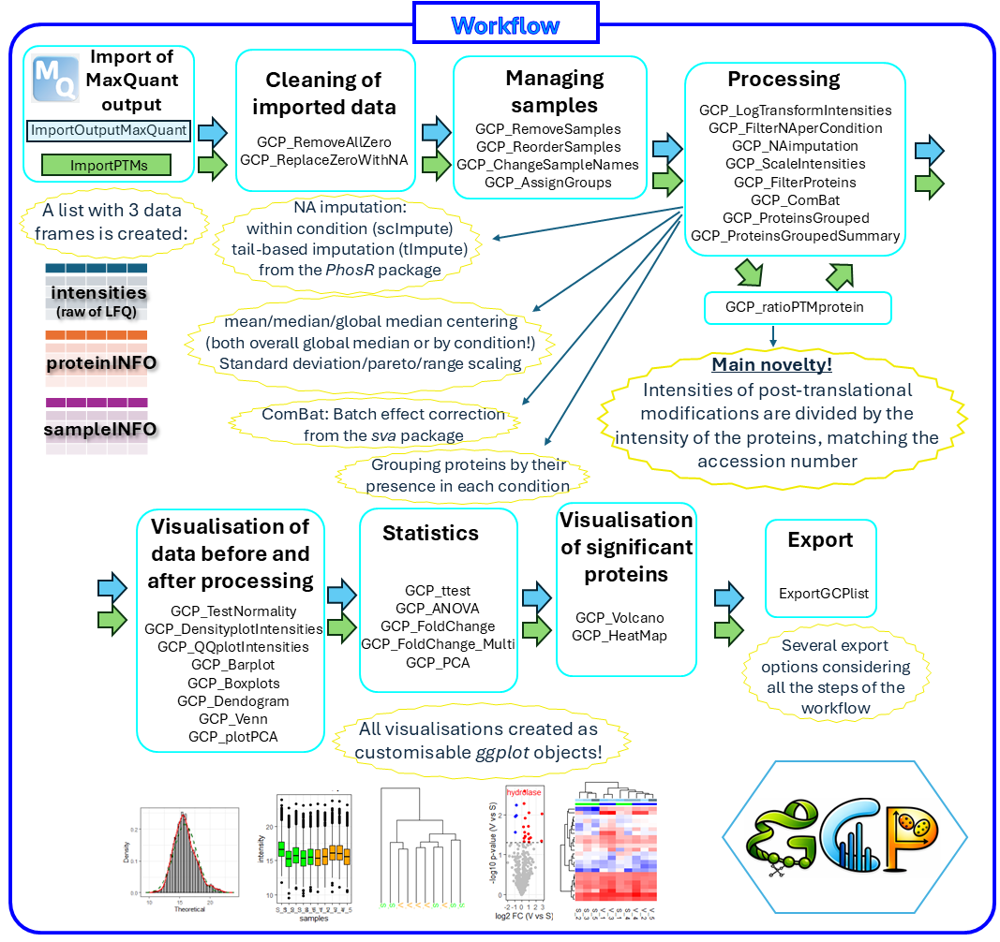

The GetCoolProteopipe (GCP) package is the coolest R-package for downstream analysis of MaxQuant proteomics outputs!
The package enables reproducible processing for non-programmers in the R environment, including data transformation, normalisation, missing-value imputation, batch effect correction, statistical inference and publication-ready visualisation; all in a single unified pipeline!
With GCP you can perform elaboration of both global proteomics and post-translational modifications (PTMs) analysis, and the way the latter is computed is a key novelty of this package!

⚙️ Installation
Before installing, ensure the following are installed:
- R (version ≥ 4.3.1)
- Java (JDK), with the same architecture as R (64-bit or 32-bit).
- Git
Then open R (or RStudio) and run the following in the R console:
```{r, eval=FALSE} if (!require(“devtools”, quietly = TRUE)) {install.packages(“devtools”)}
devtools::install_github(“FrigerioGianfranco/GetCoolProteopipe”, dependencies = TRUE) ```
Follow the on-screen instructions to install all the dependencies.
📊 Workflow
A pleasant-to-read and complete vignettes to explain the full workflow is there for you, why don’t you have a look at it:
https://frigeriogianfranco.github.io/GetCoolProteopipe/articles/GetCoolProteopipe_workflow.html
The next link is more boring, but if you want to look at the full documentation of all the functions you can see it by clicking on this:
https://frigeriogianfranco.github.io/GetCoolProteopipe/reference/index.html
Or maybe you can more quickly type on the R-console ‘?’ followed by the name of the function you want to know everything about: you will see the description of it and of all the needed arguments, along with useful example codes!
Please, do not hesitate to contact Gianfranco (the cheminformatics nerd expert) for any questions about the functions he wrote, or Clarissa (the proteomics expert) for any questions about the proteomics workflow she conceived.

📖 Citation
If you use the package, please cite it as follows:
Frigerio G, Ansermino C, Andolfo A, Braccia C. GetCoolProteopipe R-package (2026). GitHub repository. https://github.com/FrigerioGianfranco/GetCoolProteopipe.
✍️ Credits
The idea that led to this work came from Clarissa Braccia’s mind. She conceived the proteomics workflow and wrote initial R scripts; tested the functions and suggested many improvements to them, revised all the documentations and contributed to some examples, and supervised the whole work.
The cheminformatics skills that allowed this package to exist belong to Gianfranco Frigerio. He wrote all the codes of all the functions, as well as the vignettes, documentation, and examples; implemented his ideas on the development of the algorithms and the building of the R-objects, and he is committed to maintain this package.
A fundamental contribution was made by Chiara Ansermino, who gave her inputs and ideas for the development of functions, contributed to their testing, and designed the logo of the package.
The work has been conducted within the Proteomics and Metabolomics group (ProMeFa) led by Annapaola Andolfo, who gave important inputs, supervised the development of the pipeline and revised the vignettes. The group ProMeFa works at the IRCCS San Raffaele Scientific Institute, Milan, Italy.
🏅 Acknowledgement
We acknowledge the entire ProMeFa group for their support. We also thank Edoardo Niccolò Bellini for the initial idea on how to prepare group names, which was integrated into the automatic_assignment option of the GCP_AssignGroups function.
📦 Dependencies
This package relies on external packages, cited below:
- tidyverse
- Wickham H, Averick M, Bryan J, Chang W, McGowan LD, François R, Grolemund G, Hayes A, Henry L, Hester J, Kuhn M, Pedersen TL, Miller E, Bache SM, Müller K, Ooms J, Robinson D, Seidel DP, Spinu V, Takahashi K, Vaughan D, Wilke C, Woo K, Yutani H (2019). “Welcome to the tidyverse.” Journal of Open Source Software, 4(43), 1686. https://doi.org/10.21105/joss.01686.
- readxl
- Wickham H, Bryan J (2025). readxl: Read Excel Files. R package version 1.4.5. https://doi.org/10.32614/CRAN.package.readxl.
- writexl
- Ooms J (2025). writexl: Export Data Frames to Excel ‘xlsx’ Format. R package version 1.5.4. https://doi.org/10.32614/CRAN.package.writexl.
- pals
- Wright K (2025). pals: Color Palettes, Colormaps, and Tools to Evaluate Them. R package version 1.10. https://doi.org/10.32614/CRAN.package.pals.
- ggvenn
- Yan L (2025). ggvenn: Draw Venn Diagram by ‘ggplot2’. R package version 0.1.19. https://doi.org/10.32614/CRAN.package.ggvenn.
- ggpubr
- Kassambara A (2026). ggpubr: ‘ggplot2’ Based Publication Ready Plots. R package version 0.6.3.https://doi.org/10.32614/CRAN.package.ggpubr.
- ggdendro
- de Vries A, Ripley BD (2025). ggdendro: Create Dendrograms and Tree Diagrams Using ‘ggplot2’. R package version 0.2.0. https://doi.org/10.32614/CRAN.package.ggdendro.
- GetFeatistics
- Frigerio G (2025). “Streamlining feature elaboration and statistics analysis in metabolomics: the GetFeatistics R-package.” Journal of Integrative Bioinformatics. https://doi.org/10.1515/jib-2025-0047.
- PhosR
- Kim H, Kim T, Hoffman N, Xiao D, James D, Humphrey S, Yang P (2021). “PhosR enables processing and functional analysis of phosphoproteomic data.” Cell Reports, 34(8), 108771. https://doi.org/10.1016/j.celrep.2021.108771.
- Kim H, Kim T, Xiao D, Yang P (2021). “Protocol for the processing and downstream analysis of phosphoproteomic data with PhosR.” STAR Protocols, 2(2), 100585. https://doi.org/10.1016/j.xpro.2021.100585.
- sva
- Leek JT, Johnson WE, Parker HS, Jaffe AE, Storey JD (2012). “The sva package for removing batch effects and other unwanted variation in high-throughput experiments.” Bioinformatics, 28(6), 882–883. https://doi.org/10.1093/bioinformatics/bts034.
- Johnson WE, Li C, Rabinovic A (2007). “Adjusting batch effects in microarray expression data using empirical Bayes methods.” Biostatistics, 8(1), 118–127. https://doi.org/10.1093/biostatistics/kxj037.